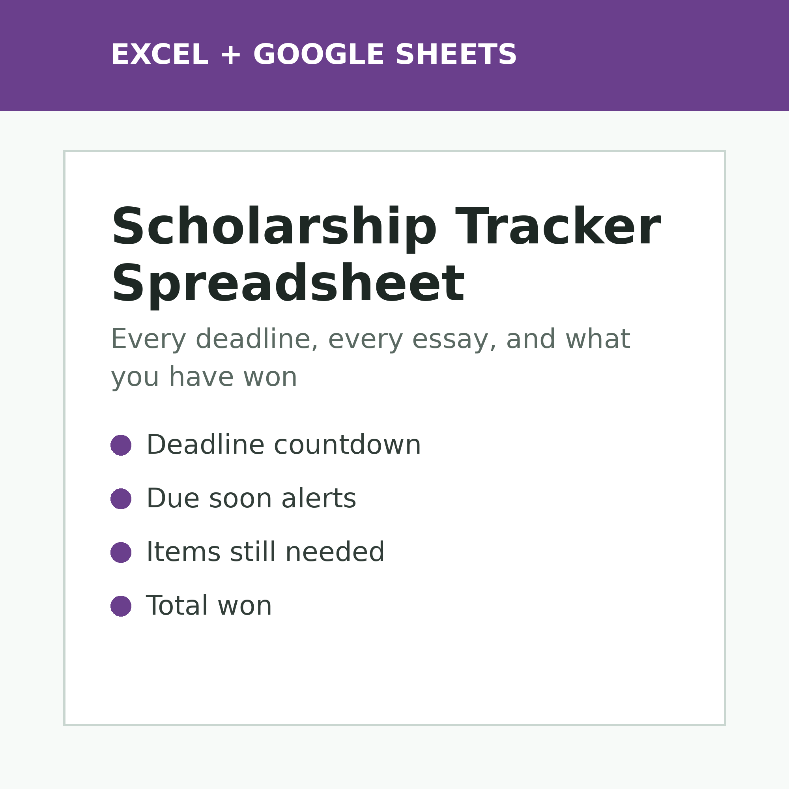

Scholarship Tracker Spreadsheet
$12
Keep every scholarship, deadline and requirement in one list. See what is due soon, what you still need to write or request, how much you have applied for and how much you have won.
Get it on Gumroad →
What's included
- Scholarship list for 200 scholarships: provider, amount, deadline and status
- Days-left countdown with Due soon and Missed deadline alerts
- Essay, recommendation letters, transcript and other documents marked Needed, Done or Not needed
- Dashboard: amount applied for, applications submitted, scholarships won, total won and win rate
- Deadlines coming up in the next 14 days and the items you still need
- Choose your currency and how many days ahead to be warned
Instant digital download. Works in Microsoft Excel and Google Sheets. An organizing tool, not financial advice. Always confirm each deadline with the provider.
← All TallyBloom spreadsheets